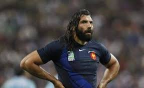

L'histoire du rugby ne commença qu'au XIXe siècle, en 1823 plus exactement, dans le collège de Rugby, une ville du centre de l'Angleterre.Un jour de novembre 1823, un élève (William Webb Ellis) se met à courir avec le ballon dans ses bras, au cours d'une partie de football.Le rugby aujourd’hui doit faire face à l'arrivée encore récente du professionnalisme. Les règles évoluent encore, de nouveaux championnats éclosent, petit à petit à rattraper leur retard et à rivaliser avec les autres. Ils existent plusieurs style d'équipes au rugby: -Le rugby à XIII -Le rugby à VII -Le rugby à XV -Le touch et le flag rugby
Les All Blacks
L’équipe nationale la plus performante de l’histoire du rugby,les All Blacks sont l’équipe nationale qui compte le plus grand nombre de victoires de l’histoire du rugby. Elle compte plus de victoires que de défaites contre chacun de ses adversaires. Beaucoup de nations ne l'ont jamais battue et ce malgré plus d'un siècle de rencontres : c’est le cas notamment de l’Écosse, l’ArgentineNote 5, l’Italie, le Canada, les Fidji, les Samoa et les Tonga, pour n’en nommer que quelques-unes.Seules sept nations ont réussi cet exploit : l'Australie, l'Afrique du Sud, la France, l'Angleterre, le pays de Galles, la Rhodésie et l'Irlande. La plus large victoire de l'équipe est obtenue le 4 juin 1995, lorsqu’elle bat le Japon 145 à 1777. A contrario, elle connaît sa plus large défaite le 28 août 1999 contre l’Australie sur le score de 7 à 28, soit un écart de 21 points 77.
Si cette équipe et si forte c’est grâce à ces joueurs, tous étant de renommé mondiale.
Le stade français
Ce club représente la capitale, Paris. Elle est en rivalité avec le racing club du 92. Ce club évolue dans le championats français dénommé le Top 14
Sébastien Chabal
Était le seul joueur français a faire peur a l'équipe des all blacks. En équipe de France c'etait l'un des seul joueurs à pouvoir rivaliser avec cette équipe .
Jonah Lomu
En une dizaine d'années, Jonah Lomu s'est construit un palmarès honorable avec un titre de championnat des provinces de Nouvelle-Zélande, deux éditions du Super 12, trois éditions du Tri-nations, une place de finaliste en Coupe du monde et une autre de demi-finaliste.
Jonny Wilkinson
Sur une période de douze ans, Jonny Wilkinson s'est construit un palmarès conséquent, le titre de Champion du monde 2003 restant l'exploit le plus retentissant de sa carrière. Lun des plus grand demi-d'ouverture dans l'histoire du rugby.